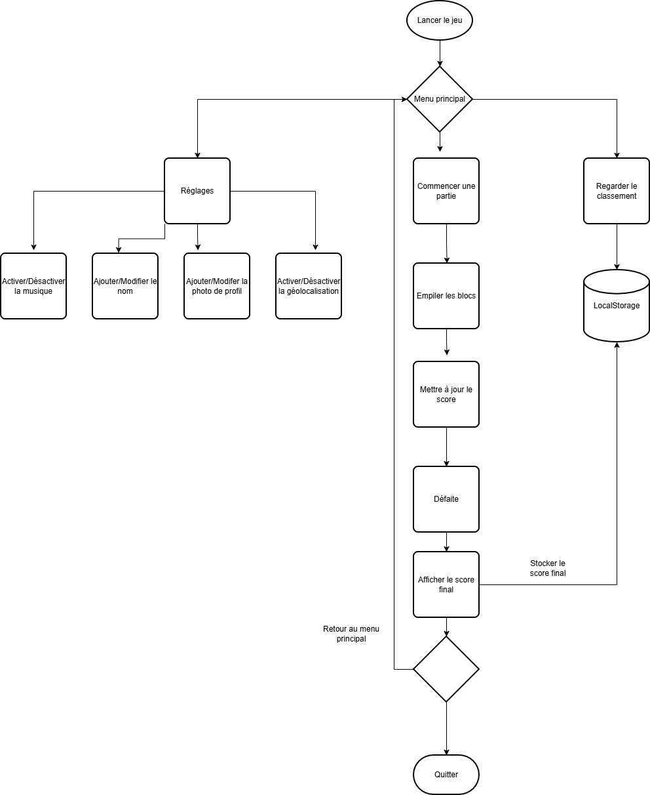

Flux et sitemap de votre projet
Par Théo Mayoraz le 22/10/2025 à 09:38
Pour visualiser le flux utilisateur et la structure du site de notre projet Tetris, nous avons créé un diagramme de flux. Le diagramme de flux illustre les différentes étapes que l'utilisateur traverse, depuis le lancement du jeu jusqu'à la fin de la partie, en passant par les états de jeu actif.
